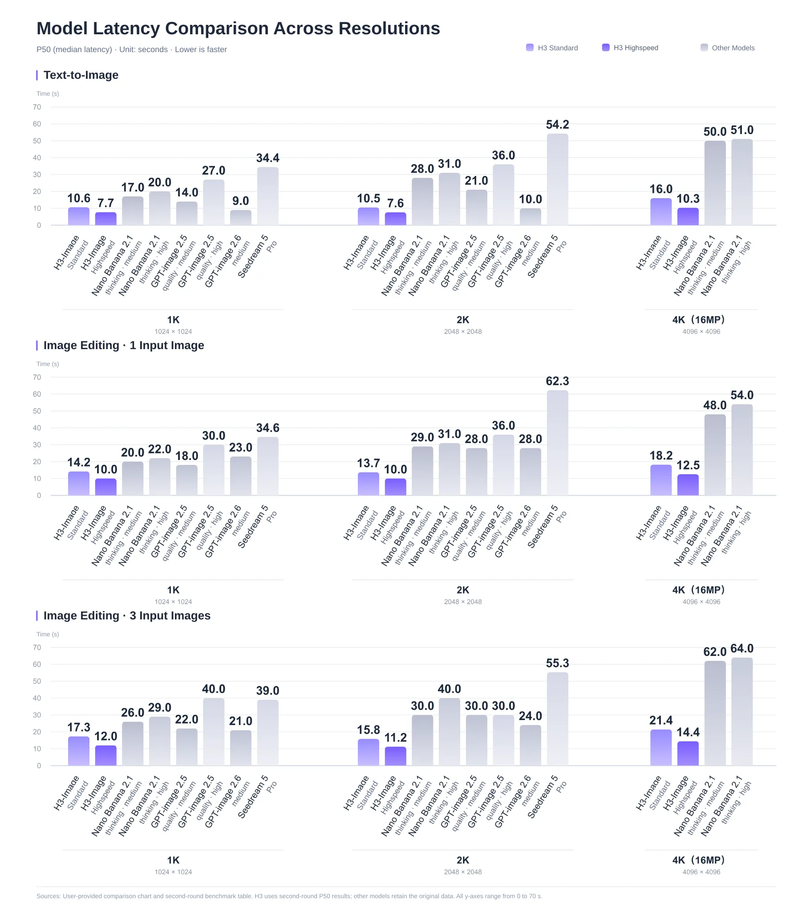

定位、日期与开放边界

| 组件 | 规模 / 精度 | 职责与边界 |
|---|---|---|
| H3-Image DiT | 33.1B；主要BF16，embedding/timestep/output为FP32 | 文生图、参考生成、多图编辑；50层，hidden5376，56头，FFN14336 |
| H3文本编码器 | 继承Qwen3-VL完整encoder，第50层hidden | 与H3共用，另从H3仓库加载约66.7GB；不是本repo已包括 |
| H3-Image-PE | Qwen3.8-27B微调，NVFP4 | 本地文生图提示扩写，输出caption与宽高比 |
| H3-Image-Context-IR | 托管接口 | 把简短多语言请求转为完整英文画面描述；不等同PE权重 |
| 编辑PE | 仅task prompt与message assembly | 尚在开发，需要用户自选VLM；不能称已开源编辑扩写专用模型 |
主仓库约68.65GB是文件体积，不是峰值显存，也未包含约66.7GB外部文本编码器。PE的17.9GB也不是DiT量化版。许可为H3-Image Community License，PE同许可；不误标MIT/Apache。
方法、接口与训练判断
图像VAE为CNN encoder与24层2D ViT decoder，空间16倍下采样、24latent通道；DiT再做2×2patch，每个token对应32×32像素。文本和参考图经H3文本编码器，参考图另经VAE，所有token拼为单流序列，预测目标latent后再VAE解码。官方卡的架构图仍是TODO，不把旧H3含音频架构图冒充本模型新结构图。
checkpoint固定6 NFEs、guidance_scale=1；接口对其他步数/引导系数报400，negative_prompt也不支持。工作范围约4–20MP、官方建议约16MP；生成器直接输出该分辨率，不需另一个放大器。但服务端对小于min_generation_area的请求会先放大内部画布再LANCZOS缩回，不能把所有小尺寸请求解释为直接在返回尺寸上推理。
| 比例 | 官方约16MP尺寸 |
|---|---|
| 1:1 | 4096×4096 |
| 4:3 / 3:4 | 4736×3552 / 3552×4736 |
| 3:2 / 2:3 | 5024×3360 / 3360×5024 |
| 16:9 / 9:16 | 5472×3072 / 3072×5472 |
| 21:9 | 6272×2688 |
原prompt按原样使用，截到4096tokens。编辑参考图按上传顺序变成Picture1、Picture2等，支持最多16参考图；重排会改变语义。CPU generator同seed只控制初始噪声，不证明不同GPU、后端、版本的最终结果逐像素一致。
PE文生图输出expanded_caption/aspect_ratio；用户显式选比例时优先用户值。编辑模板的target_aspect_ratio允许adaptive，但它由另选VLM推断。PE默认temperature1、top_p0.95、top_k20、4096tokens含thinking、effort xhigh；schema约束只保证结构，不保证语义忠实。官方本地生成与托管API对照用的是Context-IR增强后的prompt，不能当作不带扩写的裸DiT同质量证据。

结果、反例与研究启发

博客称4K低于10秒、最高5倍，另称Standard1.5–2倍、Highspeed3–4倍；需保留图示硬件/模型/模式，不能跨模式套用最高倍数。HF卡主要给出原生尺寸、依赖与gallery，没有完整公开同预算质量benchmark数表。价格50–70%与首周4K五折是发布期宣传，不能当永久标价；本轮未调用收费API或测显存/延迟。

十参考家具拼图说明官方展示了多图编辑，但精选图不是16参考全部任务的成功率；文字推理画板也不是自动求解基准。原图全部留在src/assets，图卡细节不得靠缩略图推定准确率。
📊 相关可视化: 中文Poster